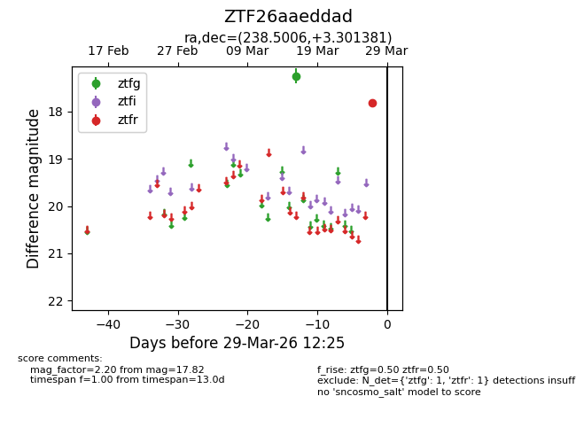
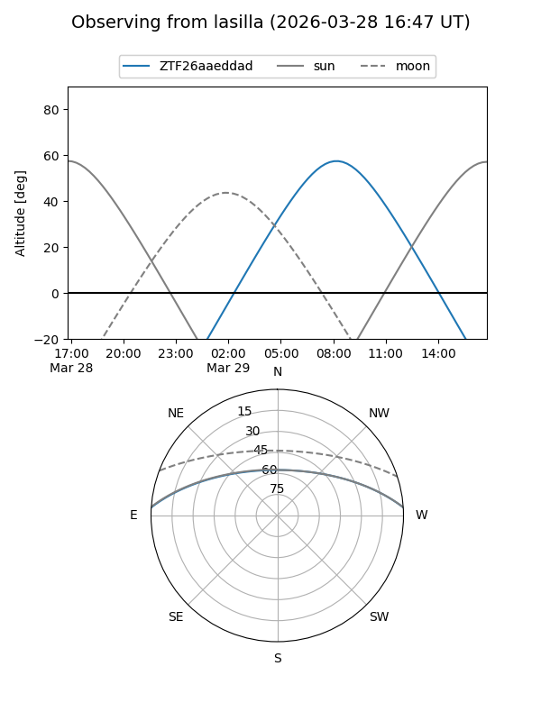
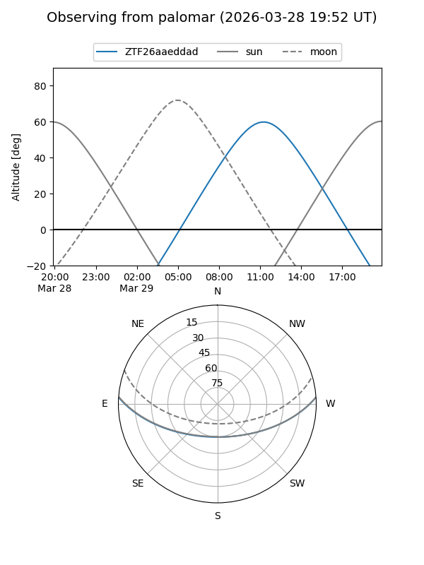

ZTF26aaeddad
Target ZTF26aaeddad at 2026-03-29 12:28
Aliases and brokers:
FINK: link
Lasair: link
ALeRCE: link
alt names
ZTF26aaeddad (ztf,fink_ztf)
Coordinates:
equatorial (ra, dec) = 238.5006,+3.30138
equatorial (HMS+DMS) = 15:54:00.14,+03:18:04.97
galactic (l, b) = (12.4217,+40.35053)
Flags:
Photometry:
last ztfg=17.25, ztfr=17.82
1 ztfg, 1 ztfr detections
Lightcurve

Visibility


Additional plots